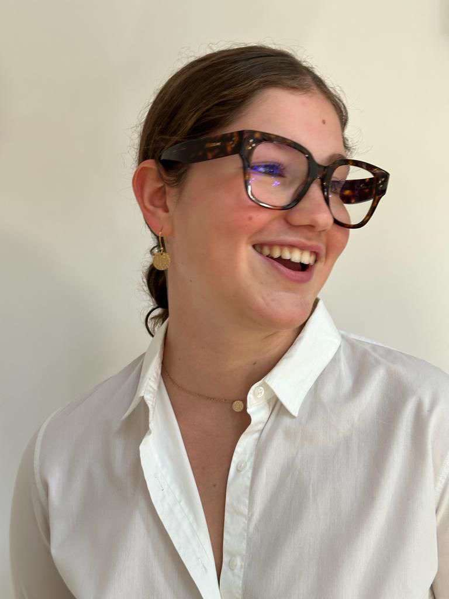

Hello I'm Floriane 😎
I'm passionate about handball, travel and cooking. I'm currently studying at the IÉSEG School of Business to develop my entrepreneurial skills.
Découvrez le handballHandball 🤾♂️
I am truly passionate about handball. The adrenaline rush I get every time I step onto the court, the strategic gameplay, and the camaraderie with my teammates make it an incredibly fulfilling experience for me. Handball isn't just a sport; it's a way of life that I wholeheartedly embrace.
Traveling ✈️🌍
Traveling is my ultimate source of joy. The thrill of exploring new destinations, experiencing different cultures, and meeting people from all walks of life is something that constantly fuels my wanderlust. Whether it's a bustling city or a remote beach, I'm always eager to pack my bags and embark on a new adventure.
Cooking 👨🍳
In the kitchen, I find my creative haven. Cooking is not just a chore; it's a passion that I cherish. The art of combining ingredients, experimenting with flavors, and creating delicious dishes is a form of self-expression for me. From whipping up exotic cuisines to perfecting classic recipes, I take immense pleasure in every culinary endeavor.